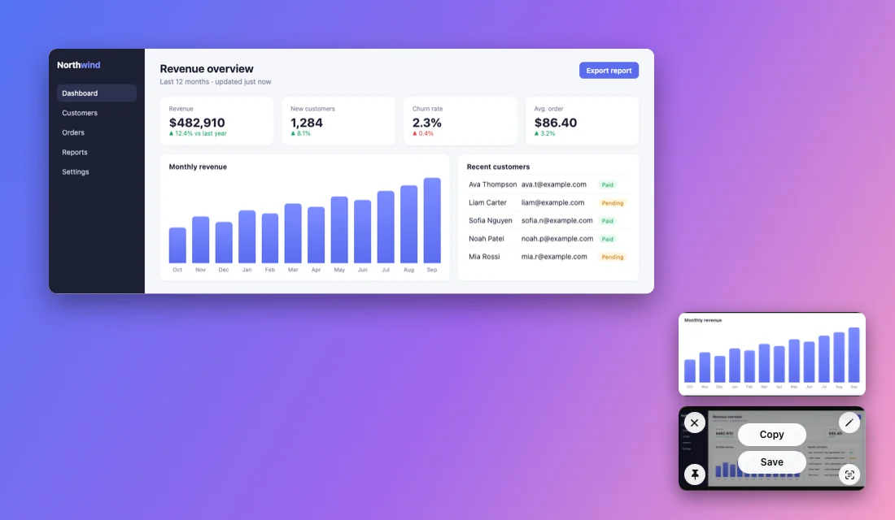

Capture · Mark up · Send
September on the revenue chart jumps. Ask Claude why.
The screen freezes so the tooltip stays put. A magnifier and a live size readout help you hit the edge exactly.
In the editor, every mark stays editable. Type a note and it lands beside the arrow. Press ⌘↩ and the image goes to your Claude Code or Codex session. With several open, a menu lists them.
- One key per tool: V A L R F O P H T N X B S C
- Pixelate or blur the customer emails before it leaves
- The Claude Code plugin delivers it between turns


Record a meeting
Weekly sync. You listen, Glimpse takes the notes.
It spots calls in Meet, Zoom, Teams, Slack, Discord, FaceTime, Webex and Tuple. A small pill shows the time with mute, pause and stop.
When the call ends you get a transcript with speakers, written on your Mac, saved as a markdown file in ~/Glimpse/Meetings.
- Transcription and voice profiles stay on device
- Your agent can search past transcripts too, if you allow it

Hand off · Pin
Match the new chart to the design. Keep the reference in sight.
Each capture waits in the corner of the screen. Hover it to copy, save, or drag it straight into Slack, Mail or Finder.
Pin it and it floats above every window while you work in the editor underneath.
- ⌥⇧⌘7 captures the same area again
- ⌥⇧⌘9 brings back the last capture


Record the screen
Explain a change once, on video, instead of in a long message.
Glimpse records to MP4 with a round camera bubble you can drag anywhere, your mic, and the system audio.
The control bar shows time and level, with pause, restart and stop. The file lands in the corner like any capture, ready to drag into the pull request.
Keep · Find · Stitch
Hand off a long thread without ten separate attachments.
A scrolling capture takes the whole page in one image. Double-tap right Shift and your last 30 screenshots slide in at the screen edge.
Select the ones you need and Stitch them into one numbered image, laid out so an AI model shrinks it the least.
- Copy, draw on, send or delete from the stack
- Text capture with on-device OCR reads QR codes too

Agents · MCP
Your agent checks its own UI work, and draws back.
Add the MCP server once
claude mcp add glimpse -- /Applications/Glimpse.app/Contents/MacOS/Glimpse mcpClaude Code, Cursor and other agents can list your windows, screenshot one even when it is covered, read its text, and record a short clip to see an animation.
When something is off, the agent draws on the screenshot in its own colour, with arrows, boxes and notes, and it shows up in your recent stack.
- Off until you allow it
- Agents can also search your meeting transcripts
› check the header spacing against the spec ● glimpse list_windows Northwind · Revenue overview ● glimpse screenshot_window (behind your editor) ● glimpse show_image: box and note “16 pt gaps here” added to recent stack as Claude · spacing The cards sit 16 pt apart. The spec says 24. I marked it.

The whole kit, by job.
The day above used most of it. Here is the rest, grouped the same way.
Capture
- Area
⌥⇧⌘4 - Window cut-out
⌥⇧⌘5 - Scrolling page
⌥⇧⌘6 - Text and QR
⌥⇧⌘2 - Fullscreen
⌥⇧⌘3 - Self-timer
⌥⇧⌘8 - Screen recording
⌥⇧⌘R - Meetings, auto-detected
Mark up
- Curved arrows, boxes
- Numbered steps, highlighter
- Text and notes that sit beside a mark
- Pixelate, blur, spotlight, crop
- Every mark stays editable
Hand off
- Copy, save, drag from the corner
- Pin above every window
- Send to Claude Code or Codex
⌘↩ glimpse://URLs for Shortcuts, Raycast, scripts
Keep
- Last 30 screenshots
⇧⇧ - Stitch into one numbered image
- Meeting notes in ~/Glimpse/Meetings
- MCP for agents, off until allowed
Tomorrow, start with it already in the menu bar.
Free and open source under MIT. Native for macOS 14 and later, on Apple silicon and Intel. It updates itself. OCR, transcripts and voice profiles never leave your Mac.
curl -fsSL https://raw.githubusercontent.com/miladbeigi/glimpse/master/install.sh | bashclaude mcp add glimpse -- /Applications/Glimpse.app/Contents/MacOS/Glimpse mcp